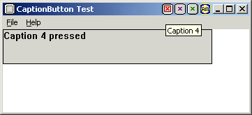

Кнопки в заголовке окнаАвтор: Anish Mistry.  Требования: VC6 SP4, W2K SP1 - Может не работать в Win95 с DirectX :). Здесь представлен класс под названием CCaptionButton,
задача которого упростить создание кнопок Возможности:
Вот небольшой пример создания кнопок при помощи класса CCaptionButton:
// объявляем переменную класса
CCaptionButton cbExtra;
// подкласс окна
cbExtra.Init(hWnd);
// устанавливаем тип заголовка CB_APPWINDOW/CB_TOOLWINDOW
cbExtra.SetCaptionType(CB_APPWINDOW);
// какой тип окна CB_SDIMDI/CB_DIALOG
cbExtra.SetWindowType(CB_SDIMDI);
// устанавливаем количество заголовков (Minimize/Maximize/Close)
cbExtra.SetNumOfDefaultCaptions(3);
// устанавливаем прозрачный цвет картинок
COLORREF crTransparent = RGB(255,0,255);
cbExtra.SetTransparentColor(crTransparent);
// устанавливаем bitmap который будет отображаться
cbExtra.SetSelectionBitmap((HBITMAP)LoadImage(hInstance,
MAKEINTRESOURCE(IDB_SELECTION),
IMAGE_BITMAP,
0,0,
LR_LOADMAP3DCOLORS | LR_DEFAULTCOLOR));
// создаём bitmaps при наведении мышки (можно конечно загружать его
// напрямую, но данный способ экономит память)
HBITMAP hMouseOverBitmap = (HBITMAP)LoadImage(hInstance,
MAKEINTRESOURCE(IDB_MOUSEOVER),
IMAGE_BITMAP,
0,0,
LR_LOADMAP3DCOLORS | LR_DEFAULTCOLOR);
// кнопка AM Productions
HBITMAP hCaptionAMBitmap = (HBITMAP)LoadImage(hInstance,
MAKEINTRESOURCE(IDB_BITMAP_AM),
IMAGE_BITMAP,
0,0,
LR_LOADMAP3DCOLORS | LR_DEFAULTCOLOR);
HBITMAP hCaptionAMBitmapHilite =
CCaptionButton::CombineBitmaps(hCaptionAMBitmap,
hMouseOverBitmap,
crTransparent);
// кнопка 2
HBITMAP hCaption2Bitmap = (HBITMAP)LoadImage(hInstance,
MAKEINTRESOURCE(IDB_BITMAP2),
IMAGE_BITMAP,
0,0,
LR_LOADMAP3DCOLORS | LR_DEFAULTCOLOR);
HBITMAP hCaption2BitmapHilite =
CCaptionButton::CombineBitmaps(hCaption2Bitmap,
hMouseOverBitmap,
crTransparent);
// кнопка 3
HBITMAP hCaption3Bitmap = (HBITMAP)LoadImage(hInstance,
MAKEINTRESOURCE(IDB_BITMAP3),
IMAGE_BITMAP,
0,0,
LR_LOADMAP3DCOLORS | LR_DEFAULTCOLOR);
HBITMAP hCaption3BitmapHilite =
CCaptionButton::CombineBitmaps(hCaption3Bitmap,
hMouseOverBitmap,
crTransparent);
// создаём кнопку с ID =
1, битмап для наведения мышки для
// hCaptionAMBitmapHilite, нормальный bitmap для hCaptionAMBitmap,
// и текст подсказки "AM Productions - Visit Now!"
cbExtra.New(1,hCaptionAMBitmapHilite,hCaptionAMBitmap,
"AM Productions - Visit Now!");
cbExtra.New(2,hCaption2BitmapHilite,hCaption2Bitmap,"Caption 2");
cbExtra.New(3,hCaption3BitmapHilite,hCaption3Bitmap,"Caption 3");
// загружаем их напрямую из ресурсов
cbExtra.New(4,
(HBITMAP)LoadImage(hInstance,
MAKEINTRESOURCE(IDB_BITMAP5),
IMAGE_BITMAP,
0,0,
LR_LOADMAP3DCOLORS | LR_DEFAULTCOLOR),
(HBITMAP)LoadImage(hInstance,
MAKEINTRESOURCE(IDB_BITMAP6),
IMAGE_BITMAP,
0,0,
LR_LOADMAP3DCOLORS | LR_DEFAULTCOLOR),
"Caption 4");
Так же возникает вопрос, как узнать была ли нажата кнопка ? Ответ: если на кнопке кликнуть, то вызывается событие WM_CBLBUTTONCLICKED и посылается окну с кнопкой. WPARAM этого сообщения содержит ID кнопки, которая была нажата, а LPARAM содержит структуру POINT с координатами курсора (если вам понадобится отображать всплывающее меню). Для того, чтобы добавить кнопку достаточно вызвать функцию New(), только не забудьте в качестве пятого параметра указать номер места расположения кнопки (справа на лево). Так же не сложно изменять существующие кнопки. // изменяем кнопку
cbExtra.Replace(nCurrentCaptionID,
nNewCaptionID,
hNewMouseoverBitmap,
hNewNormalBitmap,
pNewToolTipText);
И, соответственно удалять их. // удаление кнопки cbExtra.Delete(nCurrentCaptionID); DownloadsСкачать демонстрашку и исходник - 42 Kb
|